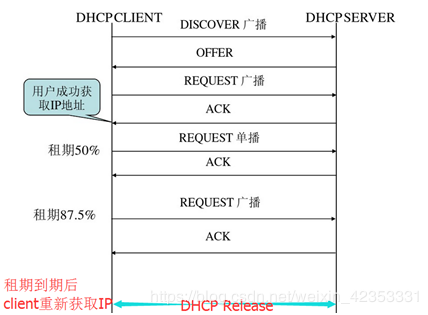

Centos7配置DHCP服务

文章目录
一,简介

DHCP协议交互过程
- DHCP DISCOVER（0x01），此为Client广播寻找可用DHCP Server的过程
- 2）DHCP OFFER（0x02），此为Server对DHCP DISCOVER报文的响应，并向Client提供配置参数等信息
- 3）DHCP REQUEST（0x03），此报文是Client对server的DHCP OFFER报文的回应，或者是Client续延IP地址租期时发出的报文
- 4）DHCP DECLINE（0x04），当Client发现Server分配给它的IP地址无法使用，如IP地址冲突时，将发出此报文，通知Server禁止使用IP地址
- 5）DHCP ACK（0x05），Server对Client的DHCP REQUEST报文的确认响应报文，Client收到此报文后，才真正获得了IP地址和相关的配置信息。
- 6）DHCP NAK（0x06），Server对Client的DHCP REQUEST报文的拒绝响应报文，Client收到此报文后，一般会重新开始新的DHCP过程。
- 7）DHCP RELEASE（0x07），Client主动释放server分配给它的IP地址的报文，当Server收到此报文后，就可以回收这个IP地址，能够分配给其他的Client。
- 8）DHCP INFORM（0x08），Client已经获得了IP地址，发送此报文，只是为了从DHCP SERVER处获取其他的一些网络配置信息，如route ip，DNS Ip等，这种报文的应用非常少见。 如：运行IPCONFIG/RELEASE后，PC会发出释放IP的报文，DHCP Message Type是7，他的作用是主动释放server分配给它的IP地址的报文，Server收到此报文后，就可以回收这个IP地址，能够分配给其他的Client。
二,实验环境
DHCP服务器：ct78 192.168.137.78（外网）
测试主机：rhel8 自动获取（外网）
DHCP是C/S模式，服务器端监听端口67/UDP（bootps），客户端默监听认端口68/UDP（bootpc）
三,实验
在DHCP服务器上安装dhcp服务
1 2 3 4 5 6 7 8 9 10 11 12 13 |
[root@ct78 ~]# cat /etc/sysconfig/network-scripts/ifcfg-eth0 NAME=eth0 ONBOOT=yes NETBOOT=yes BOOTPROTO=static TYPE=Ethernet IPADDR=192.168.137.78 PREFIX=24 GATEWAY=192.168.137.1 DNS1=192.168.137.1 DEVICE=eth0 [root@ct78 ~]# yum -y install dhcp* |
常用配置文件参数说明
1 2 3 4 5 6 7 8 9 10 11 12 13 14 15 16 17 18 19 20 21 22 23 24 25 26 27 28 29 30 31 32 33 34 35 36 37 38 39 40 41 |
subnet [网络号] netmask [子网掩码] {...}
作用：定义作用域，指定子网掩码
range [起始IP地址] [结束IP地址]
作用：指定动态获取IP地址范围，可以声明多个range但范围不能重合。
option routers [IP地址]
作用：为客户端指定默认网关，可以全局可以局部
option domain-name [域名]
作用：为客户端指定默认的域，可以全局可以局部
option domain-name-servers [IP地址]
作用：为客户端指定默认DNS服务器地址，可以全局可以局部
default-lease-time [数字]
作用：默认最小租约期限（单位秒），可以全局可以局部
max-lease-time [数字]
作用：最长租约期限（单位秒），可以全局可以局部
host [主机注释名]{
hardware [硬件类型] [硬件地址]
fixed-address [IP地址]
}
作用：用于绑定IP地址，一般硬件类型是以太网（ethernet），硬件地址是MAC地址
log-facility [日志属性]
作用：定义自身的日志属性（在/etc/rsyslog.conf日志服务配置文件中定义相应的属性会将日志存放到何处） |
编辑DHCP配置文件
1 2 3 4 5 6 7 8 9 10 11 12 13 14 15 16 17 |
dhcp配置文件地址是/etc/dhcp/dhcpd.conf
[root@ct78 ~]# vim /etc/dhcp/dhcpd.conf
#
# DHCP Server Configuration file.
# see /usr/share/doc/dhcp*/dhcpd.conf.example
# see dhcpd.conf(5) man page
#
subnet 192.168.137.0 netmask 255.255.255.0 {
range 192.168.137.101 192.168.137.200;
option domain-name-servers 192.168.137.1;
option domain-name "192.168.137.78"; #尤其注意,要么这样引用,要么写名字,否则一直无法启动报错:Failed to start DHCPv4 Server Daemon.#
option routers 192.168.137.1;
option broadcast-address 192.168.137.255;
default-lease-time 86400;
max-lease-time 259200;
} |
启动dhcpd，并开机自启
1 2 3 4 5 6 7 8 9 10 11 12 13 14 15 16 17 18 19 20 21 22 23 24 |
[root@ct78 ~]# systemctl start dhcpd
[root@ct78 ~]# systemctl enable dhcpd
[root@ct78 ~]# systemctl status dhcpd
● dhcpd.service - DHCPv4 Server Daemon
Loaded: loaded (/usr/lib/systemd/system/dhcpd.service; enabled; vendor preset: disabled)
Active: active (running) since Sat 2019-10-19 01:13:39 CST; 9s ago
Docs: man:dhcpd(8)
man:dhcpd.conf(5)
Main PID: 6597 (dhcpd)
Status: "Dispatching packets..."
CGroup: /system.slice/dhcpd.service
└─6597 /usr/sbin/dhcpd -f -cf /etc/dhcp/dhcpd.conf -user dhcpd -group dhcpd --no...
Oct 19 01:13:39 ct78 dhcpd[6597]: Internet Systems Consortium DHCP Server 4.2.5
Oct 19 01:13:39 ct78 dhcpd[6597]: Copyright 2004-2013 Internet Systems Consortium.
Oct 19 01:13:39 ct78 dhcpd[6597]: All rights reserved.
Oct 19 01:13:39 ct78 dhcpd[6597]: For info, please visit https://www.isc.org/software/dhcp/
Oct 19 01:13:39 ct78 dhcpd[6597]: Not searching LDAP since ldap-server, ldap-port and ld...ile
Oct 19 01:13:39 ct78 dhcpd[6597]: Wrote 0 leases to leases file.
Oct 19 01:13:39 ct78 dhcpd[6597]: Listening on LPF/eth0/00:0c:29:fe:b8:02/192.168.137.0/24
Oct 19 01:13:39 ct78 dhcpd[6597]: Sending on LPF/eth0/00:0c:29:fe:b8:02/192.168.137.0/24
Oct 19 01:13:39 ct78 dhcpd[6597]: Sending on Socket/fallback/fallback-net
Oct 19 01:13:39 ct78 systemd[1]: Started DHCPv4 Server Daemon.
Hint: Some lines were ellipsized, use -l to show in full. |
测试
1 2 3 4 5 6 7 8 9 10 |
[root@rhel8 ~]# vim /etc/sysconfig/network-scripts/ifcfg-ens192 TYPE=Ethernet BOOTPROTO=dhcp #修改为dhcp DEFROUTE=yes NAME=ens192 DEVICE=ens192 ONBOOT=yes [root@rhel8 ~]# nmcli connection down ens192 #升级8系列后,管理方式由NM托管 [root@rhel8 ~]# nmcli connection up ens192 |
5,如果想要IP绑定MAC
修改DHCP服务器上的配置文件，重启dhcp服务
1 2 3 4 5 6 7 8 9 10 11 12 13 14 15 16 17 18 19 20 21 22 |
[root@ct78 ~]# vim /etc/dhcp/dhcpd.conf
#
# DHCP Server Configuration file.
# see /usr/share/doc/dhcp*/dhcpd.conf.example
# see dhcpd.conf(5) man page
#
subnet 192.168.137.0 netmask 255.255.255.0 {
range 192.168.137.101 192.168.137.200;
option domain-name-servers 192.168.137.1;
option domain-name "192.168.137.78";
option routers 192.168.137.1;
option broadcast-address 192.168.137.255;
default-lease-time 86400;
max-lease-time 259200;
#fix IP assign to PC 指定某台电脑分配IP地址
host rhel8{
hardware ethernet 00:0c:29:bf:ee:87;
fixed-address 192.168.137.150;
}
}
[root@ct78 ~]# systemctl restart dhcpd |
6,重启测试主机上的network服务
1 2 3 4 5 6 7 8 9 |
[root@rhel8 ~]# nmcli device disconnect ens192
[root@rhel8 ~]# nmcli device connect ens192
[root@rhel8 ~]# ip a sh ens192
2: ens192: <BROADCAST,MULTICAST,UP,LOWER_UP> mtu 1500 qdisc mq state UP group default qlen 1000
link/ether 00:0c:29:bf:ee:87 brd ff:ff:ff:ff:ff:ff
inet 192.168.137.150/24 brd 192.168.137.255 scope global dynamic noprefixroute ens192
valid_lft 86308sec preferred_lft 86308sec
inet6 fe80::20c:29ff:febf:ee87/64 scope link
valid_lft forever preferred_lft forever |
7,常看相关文件
DHCP服务器上的租约数据库文件
1 2 3 4 5 6 7 8 9 10 11 12 13 14 15 16 17 18 19 20 21 22 23 |
[root@ct78 ~]# cat /var/lib/dhcpd/dhcpd.leases
# The format of this file is documented in the dhcpd.leases(5) manual page.
# This lease file was written by isc-dhcp-4.2.5
lease 192.168.137.101 {
starts 5 2019/10/18 17:53:59;
ends 5 2019/10/18 17:54:25;
tstp 5 2019/10/18 17:54:25;
cltt 5 2019/10/18 17:53:59;
binding state free;
hardware ethernet b0:25:aa:24:44:35;
uid "\001\260%\252$D5";
}
lease 192.168.137.102 {
starts 5 2019/10/18 18:01:32;
ends 5 2019/10/18 18:04:16;
tstp 5 2019/10/18 18:04:16;
cltt 5 2019/10/18 18:01:32;
binding state free;
hardware ethernet 00:0c:29:bf:ee:87;
uid "\001\000\014)\277\356\207";
}
server-duid "\000\001\000\001%<\256\351\000\014)\376\270\002"; |
在测试主机上查看DNS
1 2 3 4 |
[root@rhel8 ~]# cat /etc/resolv.conf # Generated by NetworkManager search 192.168.137.78 nameserver 192.168.137.1 |
查看网关
1 2 3 4 5 6 |
[root@rhel8 ~]# route -n Kernel IP routing table Destination Gateway Genmask Flags Metric Ref Use Iface 0.0.0.0 192.168.137.1 0.0.0.0 UG 100 0 0 ens192 192.168.122.0 0.0.0.0 255.255.255.0 U 0 0 0 virbr0 192.168.137.0 0.0.0.0 255.255.255.0 U 100 0 0 ens192 |